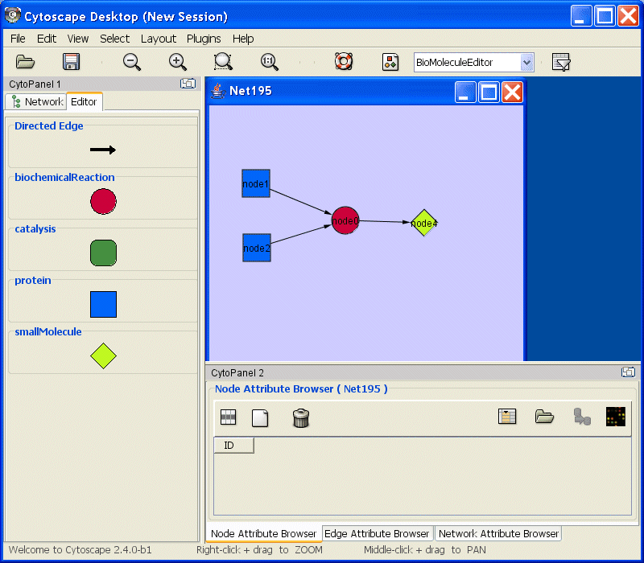
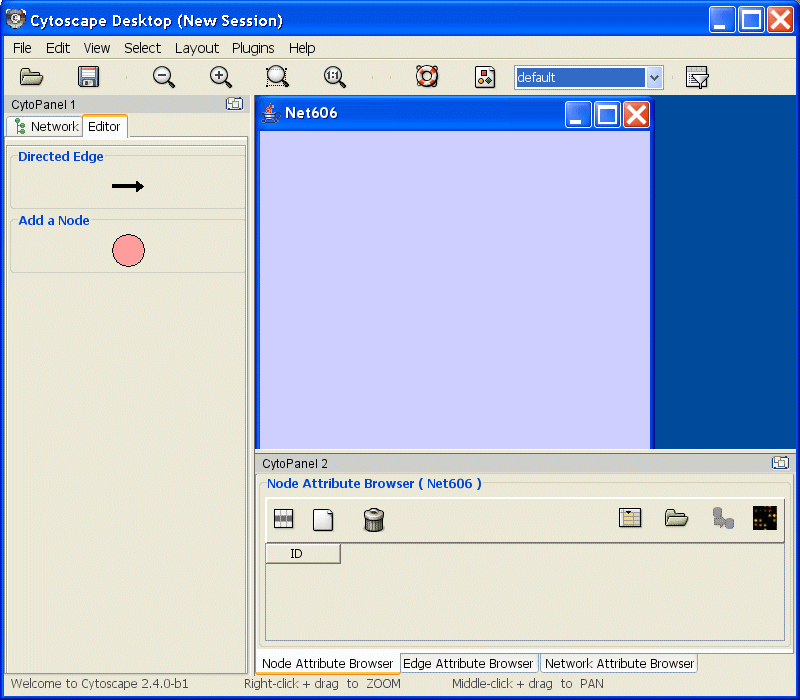

Using Cytoscape's Editor, you can build and modify networks interactively by dragging and dropping nodes and edges from a palette onto the main network view window. The palette contains a set of shapes (for nodes) and arrows (for edges). The shapes on the palette are defined by the current Visual Style, with Node Shape and Node Color mapping into the shape and color of a node, and Edge Target Arrow mapping into the target arrow of an edge. An example of an editor, with the palette contained in CytoPanel 1, is shown below.

To edit an existing network, just select the Editor tab in CytoPanel 1. To start editing a new network, use the File → New → Network → Empty Network menu item.
The figure below shows the editor with palette defined by "Default" visual style.

To add a node to a network, drag and drop a node shape from the palette onto the canvas.
To connect two nodes with an edge, drag and drop an arrow shape onto a node on the canvas. This node becomes the source node of the edge. Move the cursor and a rubber-banded line follows the cursor. As the cursor passes over another node, that node is highlighted and the rubber-banded line will snap to a connection point on that second node. Click the mouse while over this node and the connection is established.
You can abort the drawing of the edge by clicking on an empty spot on the palette.
Note that if you change the Visual Style, the palette used by the current network view will also change to be consistent with the mappings in the new Visual Style.
There is also an Edit → Connect Selected Nodes menu item that, when chosen, creates a clique amongst the selected nodes.
The editor provides accelerators for adding nodes and edges. Control-clicking at a position on the canvas creates a node at that position. The NODE_TYPE attribute of the node will be the same as the NODE_TYPE of the node most recently added, defaulting to "DefaultNode" type. In this manner, you can use control-clicking as a kind of "stamp" to add multiple nodes of the same type to the network. Control-clicking on a node on the canvas starts an edge with source at that node. Move the cursor and a rubber-banded line follows the cursor. As the cursor passes over another node, that node is highlighted and the rubber-banded line will snap to a connection point on that second node. Control-click the mouse again and the connection is established. The EDGE_TYPE attribute of the edge will be the same as the EDGE_TYPE of the edge most recently added, defaulting to "DefaultEdge" type. You can abort the drawing of the edge by control-clicking on an empty spot on the palette.
You can delete nodes and edges by selecting a number of nodes and edges, then selecting the Edit → Delete Selected Nodes and Edges menu item. You can recover any nodes and edges deleted from a network by selecting the Edit → Undo menu item. Note that this will restore all nodes and edges that were previously deleted from the network, not just those deleted by the most recent delete operation.